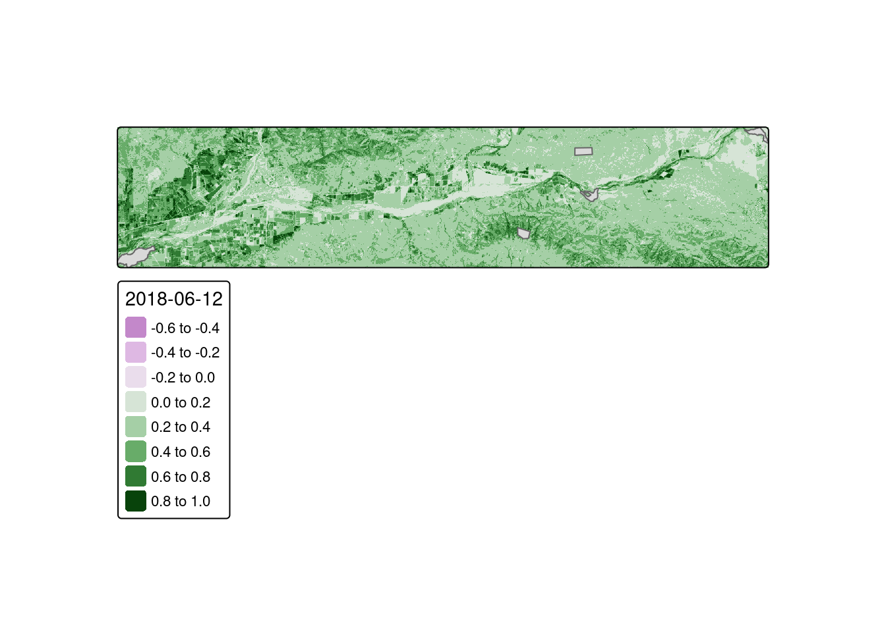
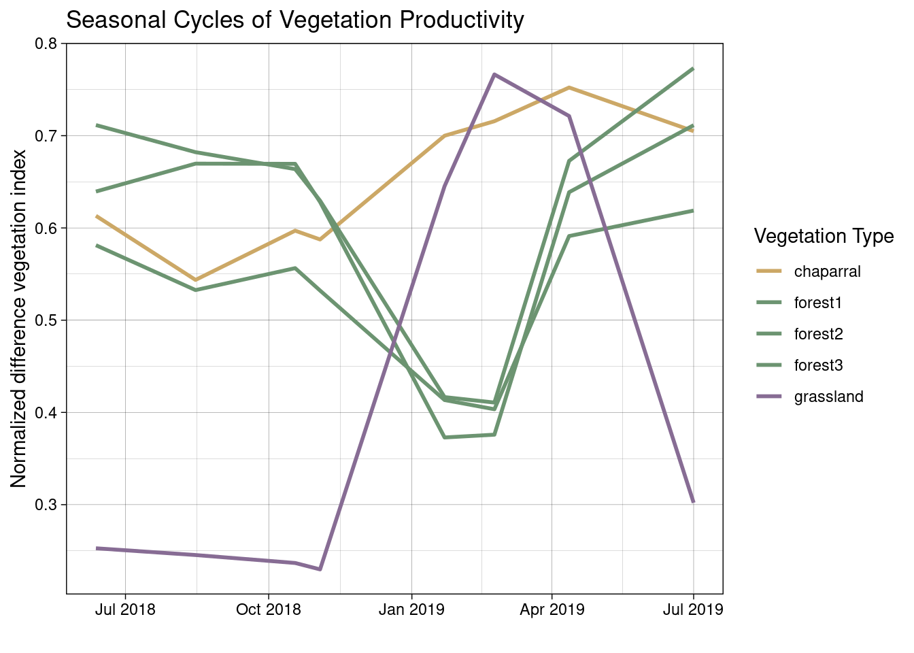

library(terra)
library(sf)
library(dplyr)
library(tidyr)
library(stringr)
library(ggplot2)
library(here)
library(tmap)
library(cowplot)Plant Phenology and NDVI
Project overview
Phenology is the timing of life history events. Important phenological events for plants involve the growth of leaves, flowering, and senescence (death of leaves). Plants species adapt the timing of these events to local climate conditions to ensure successful reproduction. Subsequently, animal species often adapt their phenology to take advantage of food availability. As the climate shifts this synchronization is being thrown out of whack. Shifts in phenology are therefore a common yardstick of understanding how and if ecosystems are adjusting to climate change.
Plant species may employ the following phenological strategies:
- winter deciduous: lose leaves in the winter, grow new leaves in the spring
- drought deciduous: lose leaves in the summer when water is limited
- evergreen: maintain leaves year round
credit: this project is based on a materials developed by Chris Kibler and used for EDS223: Geospatial Analysis with Ruth Oliver.
Task
In this project we are analyzing plant phenology near the Santa Clara River which flows from Santa Clarita to Ventura. We will investigate the phenology of the following plant communities:
- riparian forests: grow along the river, dominated by winter deciduous cottonwood and willow trees
- grasslands: grow in openspaces, dominated by drought deciduous grasses
- chaparral shrublands: grow in more arid habitats, dominated by evergreen shrubs
To investigate the phenology of these plant communities we will a time series of Landsat imagery and polygons identifying the locations of study sites within each plant community.
Data
Landsat Operational Land Imager (OLI sensor)
- 8 pre-processed scenes
- Level 2 surface reflectance products
- erroneous values were set to NA
- scale factor set to 100
- bands 2-7
- dates in filenname
- Level 2 surface reflectance products
Study sites - polygons representing sites
- study_site: character string with plant type
Summary of approach
- Convert spectral relfectance into a measure of vegetation productivity (NDVI)
- Calulate NDVI throughout the year
- Summarize NDVI values within vegetation communities
- Visualize changes in NDVI within vegetation communities
Workflow
Creating NDVI function
Let’s start by defining a function to compute the Normalized Difference Vegetation Index (NDVI). NDVI computes the difference in reflectance in the near infrared and red bands, normalized by their sum.
ndvi_fun <- function(nir, red){
(nir - red) / (nir + red)
}Creating a list of files/scenes
We want a list of the scenes so that we can tell our function to compute NDVI for each. To do that we look in our data folder for the relevant file.
# the "pattern" option returns names that end in .tif (the file extension for the landsat scences)
# the "full.names" option returns the full file path for each scene
files <- list.files(here("data"), pattern = "*.tif", full.names = TRUE)Creating iterative function
This function allows us to provide our list of files and have the NDVI function applied across all of them. This reduces the need for tedious and messy copy/pasting.
ndvi_layer_fun <- function(i){
landsat <- rast(files[i])
names(landsat) <- c("blue", "green", "red", "NIR", "SWIR1", "SWIR2")
ndvi <- lapp(landsat[[c(4, 3)]], fun = ndvi_fun)
}Run function on all scenes
Now we can use our function to create a NDVI layer for each scene and stack them into a single rasterstack.
# create NDVI layer for each scene (day) and stack into a single rasterstack
# update layer names to match date
all_ndvi <- c(ndvi_layer_fun(1),
ndvi_layer_fun(2),
ndvi_layer_fun(3),
ndvi_layer_fun(4),
ndvi_layer_fun(5),
ndvi_layer_fun(6),
ndvi_layer_fun(7),
ndvi_layer_fun(8))
#all_ndvi
names(all_ndvi) <- c("2018-06-12",
"2018-08-15",
"2018-10-18",
"2018-11-03",
"2019-01-22",
"2019-02-23",
"2019-04-12",
"2019-07-01")Compare NDVI across vegetation communities
Now that we have computed NDVI for each of our scenes (days) we want to compare changes in NDVI values across different vegetation communities.
Read in study sites
First, we’ll read in a shapefile of study sites.
sites <- st_read(here("data", "study_sites.shp"))Reading layer `study_sites' from data source
`/Users/smuir/git/EDS223/NDVI-phenology/data/study_sites.shp'
using driver `ESRI Shapefile'
Simple feature collection with 5 features and 1 field
Geometry type: POLYGON
Dimension: XY
Bounding box: xmin: 314413.3 ymin: 3803180 xmax: 353848.7 ymax: 3811694
Projected CRS: WGS 84 / UTM zone 11N# plot study sites on a single NDVI layer
tm_shape(all_ndvi[[1]]) +
tm_raster() +
tm_shape(sites) +
tm_polygons()Variable(s) "col" contains positive and negative values, so midpoint is set to 0. Set midpoint = NA to show the full spectrum of the color palette.
Extract NDVI at study sites
Here we find the average NDVI within each study site. The output of extract is a data frame with rows that match the study site dataset, so we bind the results to the original dataset.
sites_ndvi <- terra::extract(all_ndvi, sites, fun = "mean")
sites_annotated <- cbind(sites, sites_ndvi)Clean results
While we have all the information we want, the data is quite messy. Let’s clean it up a bit:
- convert to data frame
- turn from wide to long format
- turn layer names into date format
sites_clean <- sites_annotated %>%
st_drop_geometry() %>% # removes sticky geometries
select(-ID) %>%
pivot_longer(!study_site) %>% # wide to long
rename(NDVI = value) %>%
mutate(year = str_sub(name, start = 2, end = 5), # select the year part of the string
month = str_sub(name, 7, 8), # select month
day = str_sub(name, -2, -1)) %>% # select day
unite("date", 4:6, sep = "-") %>% # deletes original columns to combine into one col
mutate(date = lubridate::as_date(date)) %>% # convert date to datetime object
select(-name)Plotting the results
Now that our data is cleaned up, we can plot the NDVI for different vegetation types over time.
ggplot(sites_clean, aes(date, NDVI,
group = study_site,
color = study_site)) +
geom_line(linewidth = 1) +
theme_linedraw() +
labs(title = "Seasonal Cycles of Vegetation Productivity", color = "Vegetation Type", x = "", y = "Normalized difference vegetation index") +
scale_color_manual(values = c("#cca866", "#6c9471", "#6c9471", "#6c9471", "#876c94"))